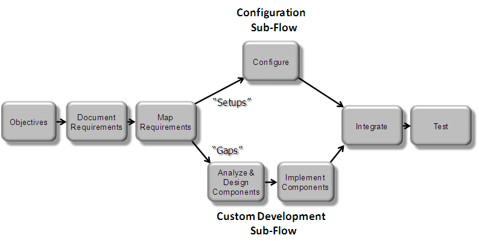
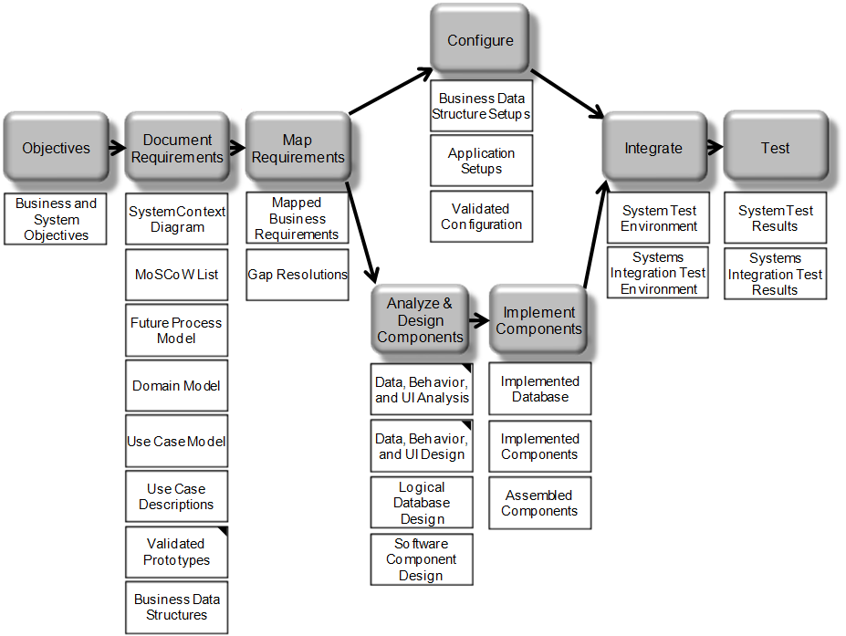
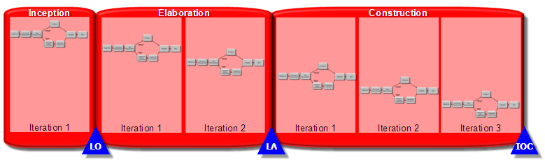
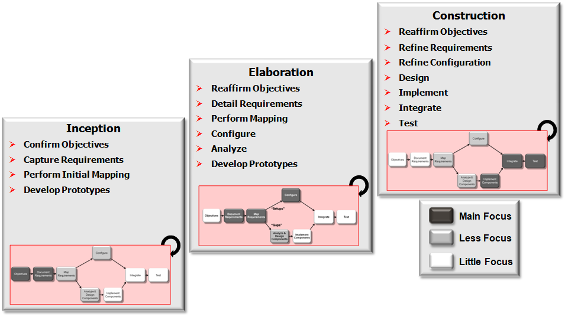
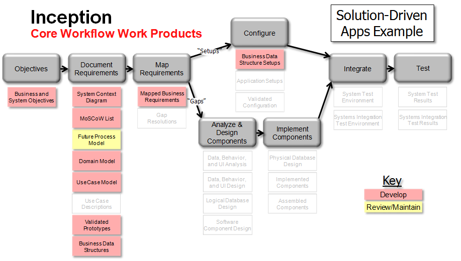
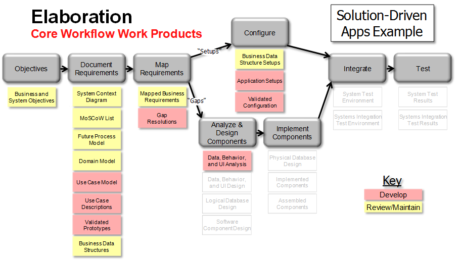
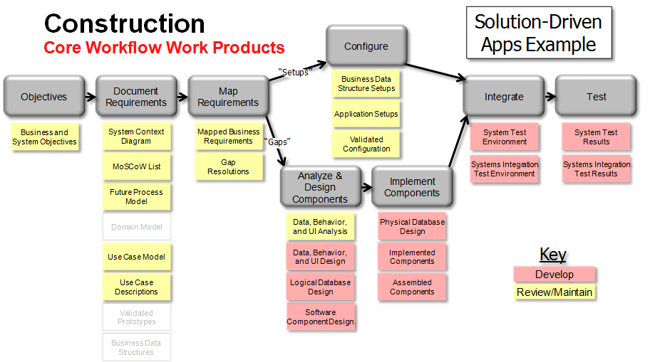

OUM |
Implement Core Workflow View |
||
Method Navigation |
Current Page Navigation |
||
|
|
||||||||
The OUM Implement Focus Area contains a comprehensive set of method materials to support the development and implementation of Oracle-based business solutions. However, with so much important material being included in OUM, it is easy for practitioners to become overwhelmed and not be able to isolate and comprehend the essential pieces that are required for a particular project or situation.
The OUM Implement Core Workflow view was created to identify the core activities and tasks within the Implement focus area. This view should serve to accelerate the understanding of OUM by new practitioners and help to keep project teams focused on these tasks. The Implement Core Workflow also highlights the tasks that are at the heart of the Implement focus area. These are the tasks that are essential to many of the projects that are supported by the method.
One of the philosophical underpinnings of OUM is to make the method serve you, rather than serving the method. In order to accomplish this, OUM adopts the philosophy of "building up" a workplan rather than "tailoring down". The Implement Core Workflow provides a good starting point for building up a project workplan.
Finally, the Implement Core Workflow helps keep project teams focused on the essentials — the most important pieces of work that are required to be successful on an OUM Implement project.

If the Implement Core Workflow were to be executed only once during a project, OUM would be a “waterfall” method. It has been broadly recognized and documented that the highest quality results, and lowest overall costs, can be achieved using an iterative method. An iterative approach embraces requirements change by building processes into the project that allow for refining requirements while also maintaining a strong focus on cost and scope containment.
Since OUM is an iterative approach to implementing software systems, it is essential that practitioners first understand the concepts of iterations as they are explained in the OUM Method Overview. OUM’s iterative approach asks that practitioners, “Think a little - do a little. Think a little more – do a little more.” Iteration is not about doing things over and over. Iteration is really about three things:
OUM can be scaled in a number of dimensions. You should do no more than is necessary to satisfy the requirements of the project and appropriately address risks. The Implement Core Workflow, along with OUM's diverse set of views supports our philosophy of "building up" a workplan rather than "tailoring down." In addition to the workflow and views, you should follow these steps when considering the tasks to include in your OUM-based workplan:
Start from a core set of tasks. Consider using the Implement Core Workflow along with an OUM view that best matches the needs of your project. Remember, views tend to be a superset of tasks related to a particular solution, discipline or technology. Therefore, the Implement Core Workflow and views should be used together to achieve the right balance for your project. Even the OUM Implement Core Workflow may contain tasks that are not required for a particular project. In fact, very small projects may only require one task or a handful of tasks.
Add tasks as you identify scope and risk. Once you have established the core of what you need to accomplish, add tasks as you identify scope and risk on your project. First consider additional tasks based on the following risk areas:
Once you have determined additional tasks based on an analysis of these risk factors,consider adding tasks for the following:
Consider the depth to which you will execute specific tasks. Placing a task into an OUM iteration plan or onto an OUM workplan is not a binary event. Tasks are not all or nothing. You must consider the depth to which you should execute tasks on an OUM project. In fact, the depth to which you execute a task will change from iteration to iteration. Too much or too little discipline, or work, are both risky.
You must consider the depth to which you will execute a task during each iteration. Under the proper circumstances, spending the time to simply consider a task can constitute executing the task. This is a perfectly acceptable practice and is often preferable to eliminating the task altogether. Tasks are there to remind you of the process and order of the work.
For example, assume that you are at the beginning of an iteration of the Construction phase of an OUM project. You might think that it is long past the time to execute the task “Develop Business and System Objectives” – and you would be correct. However, while you should not go back and redo the task, if you don’t spend a few minutes to consider whether the objectives have changed, then you run the risk of not aligning with the objectives.
In the same way, requirements related tasks must also be “considered” during later phases. If requirements have changed, then the project must consider the changes. Of course, that does not mean that the changing requirements will be incorporated into the scope of the project free of charge. But to deliver the project without considering new or changing requirements may mean low user satisfaction or a system that does not meet the needs of the business.
The OUM approach is intended to help you provide a strong definition of scope against which to evaluate changing requirements. First, this helps you identify when the requirements have changed. Second, this aids you in determining how the costs associated with changed requirements will be addressed.
Combine tasks and work products. Finally, consider whether it is advisable or appropriate to combine tasks or to execute your project using OUM activities — which are groupings of tasks. You also may see fit to combine several of OUM's work products into a single artifact or user deliverable. While OUM provides templates for many of the tasks, it is not advisable to create documents for each task.
The Implement Core Workflow is primarily focused in the first three phases – Inception, Elaboration, and Construction. The workflow covers tasks in 7 processes – Business Requirements, Requirements Analysis, Mapping and Configuration, Analysis, Design, Implementation, and Testing.
These processes contain the core elements that are required to establish the project’s scope and elicit and document the requirements. While the purpose of a software implementation project is to “implement software,” the success or failure of such a project is usually determined in these important processes. The most difficult part of implementing good software is not the configuration and implementation of the software itself. It is to gain an appropriate understanding of the requirements of the users and of the business so that the software can be configured and implemented to support those requirements.
Here is the complete Implement Core Workflow with links to the tasks and work products table at the end of this view. Place your cursor over the area of interest in the diagram and click.

The OUM Implement Core Workflow is executed during each iteration in the Inception, Elaboration, and Construction phases of OUM – though the emphasis will be different for each iteration.
The boxes in the Implement Core Workflow above do not represent any specific construct within OUM. The intent is to present a high level conceptual view. Therefore the diagram is a conceptual look at the core workflow.
The workflows begins with determining or reviewing the objectives for the project. Next, we gather requirements in the form of a System Context Diagram, Future Process Model, and Use Case Diagram, which define the scope for the project.We will prioritize these high-level requirements on our MoSCoW List. In later iterations, we add more detailed Future Process Models and Use Case Specifications, as required.
The next step is to “map” the requirements onto the products or applications that have been chosen. This is often referred to as “Fit/Gap” or “Map and Gap.” Essentially, an analysis of the requirements is done to determine which requirements can be met by configuring the Oracle product set and which requirements will drive the development of custom application software.
This is the point where the core workflow splits into two parallel sub-flows. For those requirements that are satisfied by products, the configurations are determined and recorded. For the “Gaps” that have been identified, further analysis of the functional requirements and corresponding design of the custom components is completed to develop the models and specifications necessary to develop the custom extensions or custom application software. Those components are then implemented into software.
Ultimately, the sub flows converge as the custom components are integrated with the configured product software. The resulting integrated system is tested.
Remember, the core workflow is a high-level look at OUM. It is designed to speed a user’s understanding of OUM, but it is not an exhaustive look at what the method can support. While the workflow is executed in each iteration, tasks or steps may be skipped in any given iteration.
It is again important to remember that use of the models defined in OUM will differ between projects. While OUM supports the development of use cases to capture all of the functional requirements, we typically recommend that use cases be developed only to explore the details of functional requirements that are not fully supported by product-based functionality. If a more agile approach is being employed, OUM supports the use of user stories to capture requirements.
For example, it is not necessary to develop a complete set of use cases for the Oracle E-Business Suite, only for the custom extensions or custom application software being developed to satisfy the unique project requirements. On the other hand, other Oracle products involve complex “configurations” that would benefit from the development of detailed use cases and analysis and design artifacts that are part of the Custom Development sub-flow. Also, some projects begin with a predefined solution. In that case, the proposed Future Process Models or use cases may already be defined. The “Map Requirements” block is then used to map the proposed solution against the customer requirements. This approach often uses some sort of functional prototype – often referred to as a conference room pilot – to accomplish the mapping activities.
To reiterate, the Implement Core Workflow represents a single workflow, but there are also two paths (sub-flows) that can be followed. The sub-flows share some tasks, while they diverge in some areas. However, most projects will probably use both sub-flows. That is, even a project where a large portion of the functional requirements can be satisfied by using standard product functionality and thereby follows the Configuration sub-flow, often has some user-unique requirements that are not fully satisfied by the product. These “gaps” might require some custom developed application software and would also make use of the Custom Development sub-flow.
As we touched on in the previous section, the Implement Core Workflow is really the combination of two parallel and complementary sub-flows. Using one sub-flow does NOT preclude using the other. Both sub-flows can and very often are appropriate on a single project.
The Configuration sub-flow supports making the appropriate configuration choices within the product software to support the specific user requirements.
This sub-flow also includes the definition of any Business Data Structures that may be required. Some examples of these are: Chart of Accounts, Multi-Organization Setups, or Trading Community Architecture.
The Custom Development sub-flow seeks to support the requirements that cannot be fully satisfied by commercial-off-the-shelf (COTS) products. It supports analyzing the functional requirements and gaps to create a design for user software or very complex "configurations" that are required to satisfy those requirements. This sub-flow is intended to cover the complete range of custom software from complex, orchestrated business processes down to minor form or user interface updates.
It is essential to remember that in OUM’s iterative approach to system development, the Implement Core Workflow represents a single iteration. OUM Implement is divided into phases – Inception, Elaboration, Construction, Transition and Production. Each of these phases may contain one or more iterations. The number of iterations in a given phase is generally based upon the planned duration of the phase and the volume of work that will be required.
Nominally, OUM recommends one iteration for Inception, two iterations for Elaboration, and three iterations for Construction. Iterations typically last at least two weeks and not more than 6 weeks, with 2-4 weeks being optimal. By dividing the work into these chunks and focusing on the highest risk items in each chunk (or iteration), OUM helps project teams remain risk-focused. It is important to remember that the high-level Project Workplan, including planned phase and iteration milestones and durations should be established at the outset of the project. OUM does not take the approach of “iterating until we’re done” as that is a recipe for scope creep and project management chaos.
The key concept is that the Implement Core Workflow is repeated during every iteration of a project. This is the center of OUM’s iterative approach. That is not to say that every task is executed during every iteration. The intent is that every task should be “considered” during every iteration. This is what was meant in step 3 above, Consider the depth to which you will execute specific tasks.
Tasks are not binary bits of work. They are really placeholders to remind the project team of the process they should follow. The attention devoted to each task will vary by project, by phase, and by iteration. Again, simply considering a task during a given iteration may actually constitute executing that task.
However, if you look closely at the OUM’s work breakdown structure, you notice most of the Implement Core Workflow tasks appear in only one or two phases. To fully support the idea that “the workflow is repeated during every iteration of a project,” we could have placed all the Implement Core Workflow tasks in every phase. Instead, we have taken the approach of “pre-tailoring” OUM by including tasks only in those phases where we expect that task to include a significant amount of work.

While the Implement Core Workflow is executed in every iteration, the emphasis of the work shifts from phase to phase and from iteration to iteration.
This is one of the places where an iterative and incremental approach differs from a waterfall approach. For example, in a waterfall approach, the phases would be named Requirements, Analysis, Design, Implement, Test, etc. The objectives of those phases would be to complete the Requirements, Analysis, etc. Most modern software methods have adopted an iterative approach as this typically creates higher quality software that provides a better match to the user requirements. Such methods recognize that users will gain a deeper understanding of their requirements or that requirements may change, to some degree, during the development lifecycle. Rather than resist these inevitable changes, iterative methods allow for some change to happen – even embrace change - but include techniques and processes for managing costs and scope within this framework.
OUM has adopted a set of industry standard lifecycle milestones that guide project teams on maintaining the proper focus during a specific phase. Inception is focused on the Lifecycle Objective Milestone, Elaboration is focused on the Lifecycle Architecture Milestone, while Construction is focused on developing the Initial Operational Capability of the system. Each of these milestones also has a more detailed set of objectives that support that milestone.

In early iterations of an OUM project – in the Inception phase or early in Elaboration, for example – the emphasis in on eliciting and documenting the requirements by executing the Business Requirements and Requirements Analysis tasks. However, there may be some effort expended on Analysis, Design and Implementation tasks. For example, during Inception you might develop and review a Conceptual Prototype. In Elaboration, you might develop a Functional Prototype and then conducted a detailed validation of that prototype with key users, in a conference room pilot. In later iterations, the focus shifts toward Design, Implementation, and testing tasks.
However, there may be some incremental change or refinement of the requirements. As with all projects, when these requirement changes modify the scope, those changes must go through a change management process to determine how they will be funded. An iterative and incremental approach is not a license for unmanaged change and it is not an invitation for a user free-for-all. Instead, it provides a structured approach for creating a system that provides an optimal match with end user requirements.
Another example is that even during an iteration of Construction you might consider whether the Business and System Objectives for the project have changed. This is different from the exhaustive work that you did in Inception, but simply a few minutes spent to review the objectives. If nothing has changed, then no work is really done, but you have actually completed the task and refreshed your focus on those objectives. However, if the objectives have changed for some reason, then it is essential that the project team be made aware of the changes.
While the task – Detail Business and System Objectives (RD.001) – does not appear in the Construction phase in the OUM work breakdown structure, just spending a few minutes to consider the task during Construction has actually constitutes executing the task. Therefore, you may not show the task on your workplan, but, as a project manager or team lead, keeping in mind the Implement Core Workflow will help you to proceed through each iteration in an orderly fashion.
The following illustrations depict the shifting emphasis of the Implement Core Workflow in Inception, Elaboration, and Construction. The example below depicts a "Solution-Driven Applications Example." In this type of project, a predefined solution is brought to the project and the business requirements are mapped to the solution to determine if there are any gaps that might require complex configuration or custom software. If this were a Requirements-Driven example or a WebCenter or Enterprise Performance Management (EPM) implementation project, this example might be slightly different.



OUM has adopted a philosophy of building up a level of method discipline, rather than tailoring down. For further reading on agility and discipline, see Balancing Agility and Discipline: A Guide for the Perplexed. The OUM Implement Core Workflow can be used as the starting point for this build up. Even so, in certain cases the Implement Core Workflow can be further reduced. For example, on certain projects only configuration changes are considered to be in scope and no custom development is done.
Tailoring can also be done by varying the level of emphasis or documentation that is produced by a particular task. On smaller projects where a high degree of agility is required and criticality of the system is low, the project may choose to rely more on tacit knowledge and reduce the amount of documentation produced by a particular task. On larger projects, or projects that have geographically dispersed teams, or where the system is critical to the business, the amount of discipline or documentation may be increased.
The Implement Core Workflow also does not show every task that could be executed in a given iteration. For example, tasks related to business rules and services have intentionally been omitted to simplify this view. Projects that require these tasks should “build up” their workplan to include OUM’s rules or services tasks, as required. Supporting processes like Technical Architecture, Performance Management, Documentation, etc. have also not been shown, but should be added, as required.
To reiterate, the Implement Core Workflow, along with OUM's diverse set of views, supports building up a workplan. In support of this, OUM provides a generic Project Workplan, in Microsoft Project format, that can be copied and tailored for your project. The OUM Project Workplan includes tasks from OUM Manage and OUM Implement and can be:
| ID | Task | Work Product | Template |
|---|---|---|---|
RD.001 |
Detail Business and System Objectives | Business and System Objectives | Business and System Objectives |
RD.005 |
Create System Context Diagram | System Context Diagram | System Context Diagram-PowerPoint System Context Diagram-Visio Template and Stencil |
RD.045 |
Prioritize Requirements (MoSCoW) | MoSCoW List | MoSCoW List-Excel MoSCoW List-Word Generic Workshop Notes Generic Workshop Schedule and Workshop Preparation Notes |
RD.011 |
Develop Future Process Model | Future Process Model | Future Process Model-Word Future Process Model-PowerPoint |
RD.065 |
Develop Domain Model (Business Entities) | Domain Model | Domain Model |
RA.023 |
Develop Use Case Model | Use Case Model | Use Case Model-Word Use Case Model-PowerPoint Use Case Model-Visio Template and Stencil |
RA.024 |
Develop Use Case Details | Use Case Specification | Use Case Specification-Word Use Case Specification-PowerPoint |
IM.005 |
Develop Conceptual Prototype | Conceptual Prototype | Refer to the Task Overview for guidance. |
RA.030 |
Validate Conceptual Prototype | Validated Conceptual Prototype | Refer to the Task Overview for guidance. |
IM.010 |
Develop Functional Prototype | Functional Prototype | Refer to the Task Overview for guidance. |
RA.085 |
Validate Functional Prototype | Validated Functional Prototype | Validated Functional Prototype |
MC.010 |
Business Data Structures |
||
MC.030 |
Map Business Requirements | Mapped Business Requirements | Validated Functional Prototype |
MC.110 |
Define Gap Resolutions | Gap Resolutions | Refer to the Task Overview for guidance. |
MC.020 |
Business Data Structure Setups |
||
MC.050 |
Application Setup Documents |
||
MC.070 |
Configuration Prototype Environment |
Refer to the Task Overview for guidance. |
|
MC.080 |
Validated Configuration |
||
AN.050 |
Data Analysis |
||
AN.060 |
Behavior Analysis |
Refer to the Task Overview for guidance. |
|
AN.090 |
User Interface Analysis |
Refer to the Task Overview for guidance. |
|
DS.080 |
Software Component Design |
Refer to the Task Overview for guidance. |
|
DS.090 |
Component Data Design |
Refer to the Task Overview for guidance. |
|
DS.100 |
Component Behavior Design |
Refer to the Task Overview for guidance. |
|
DS.130 |
User Interface Design |
Refer to the Task Overview for guidance. |
|
DS.150 |
Logical Database Design |
||
IM.040 |
Implemented Database |
||
IM.050 |
Implemented Components |
Refer to the Task Overview for guidance. |
|
IM.070 |
Assembled Components |
Refer to the Task Overview for guidance. |
|
TE.060 |
System Test Environment |
||
TE.085 |
Systems Integration Test Environment |
||
TE.070 |
System-Tested Applications |
||
TE.100 |
Integration-Tested System |
||

Copyright © 2006, 2016, Oracle and/or its affiliates. All rights reserved.